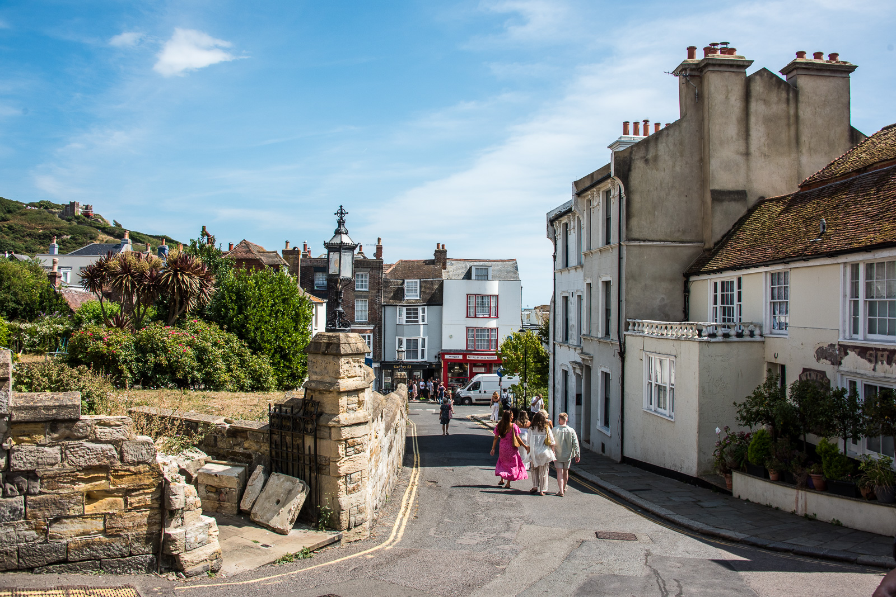
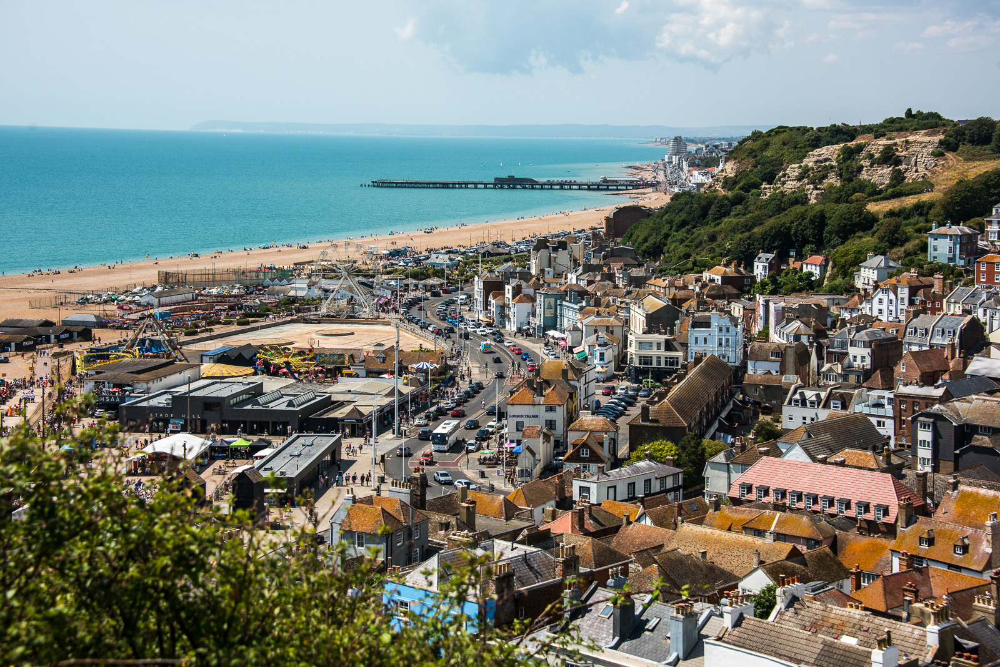
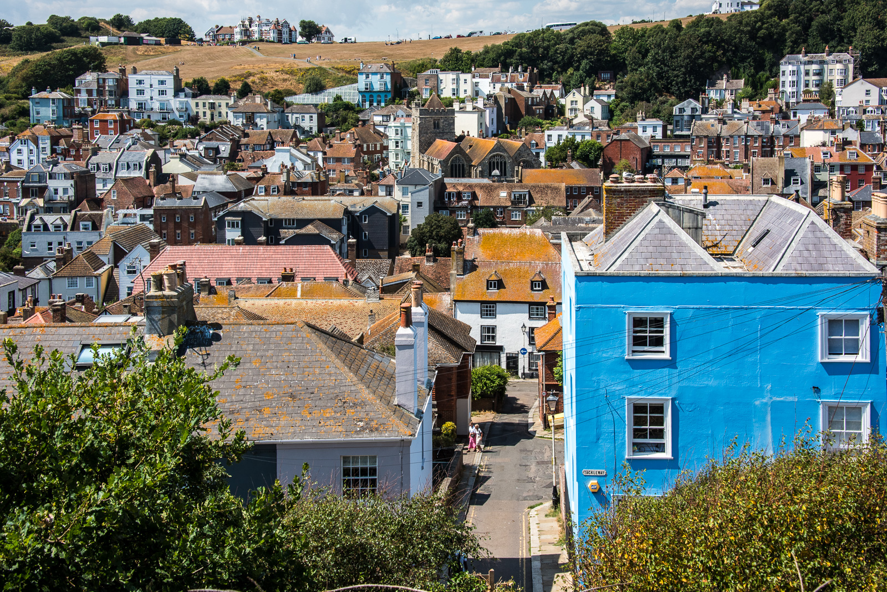
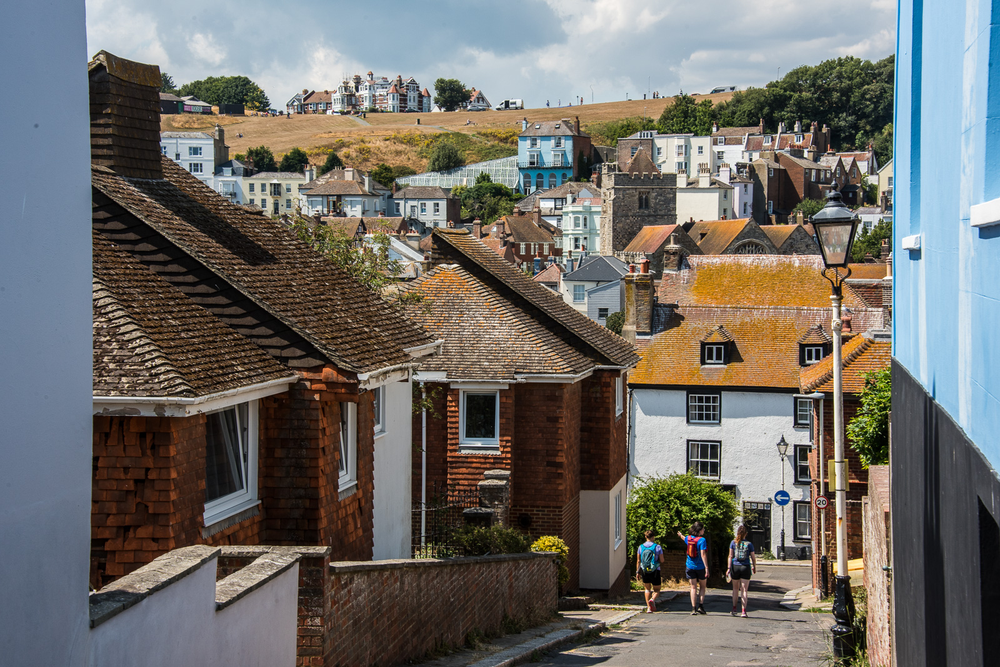
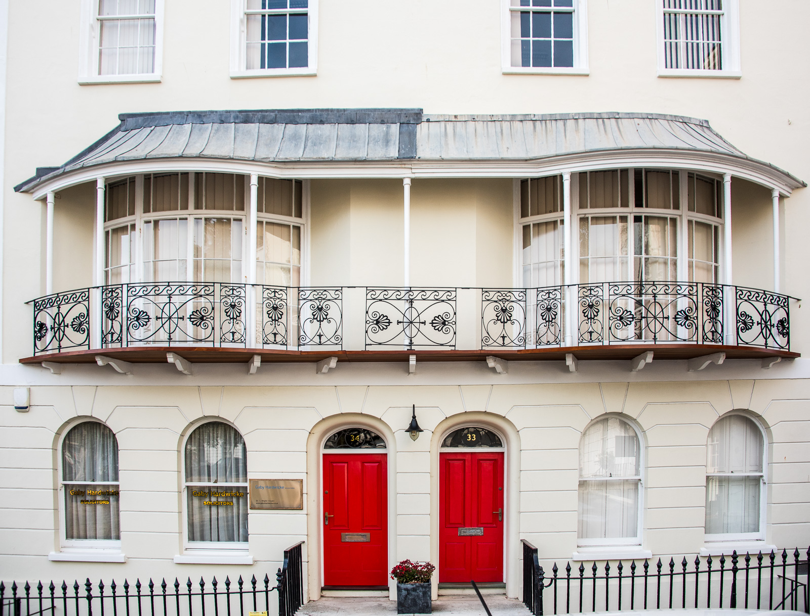
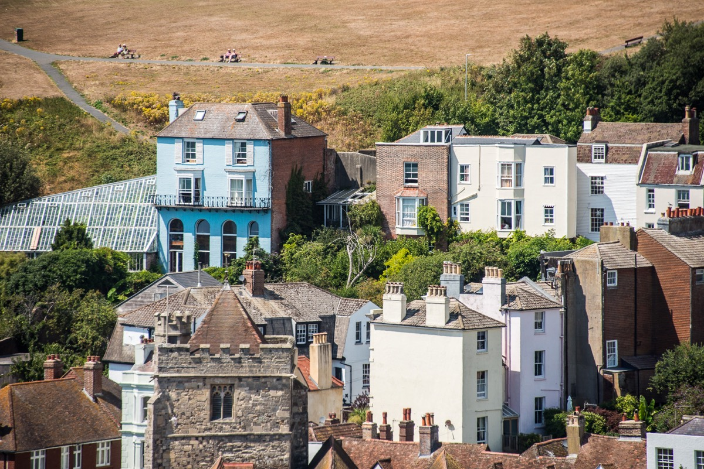
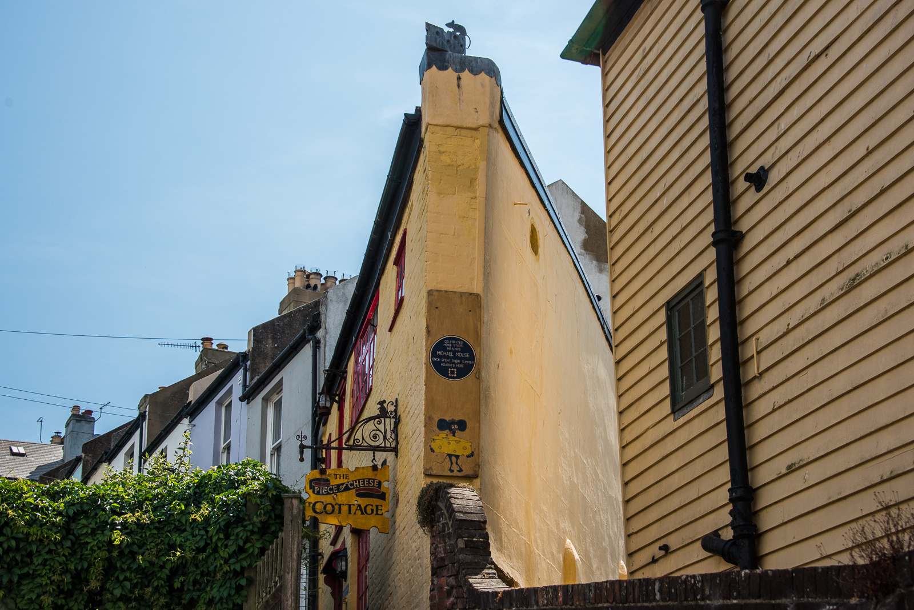
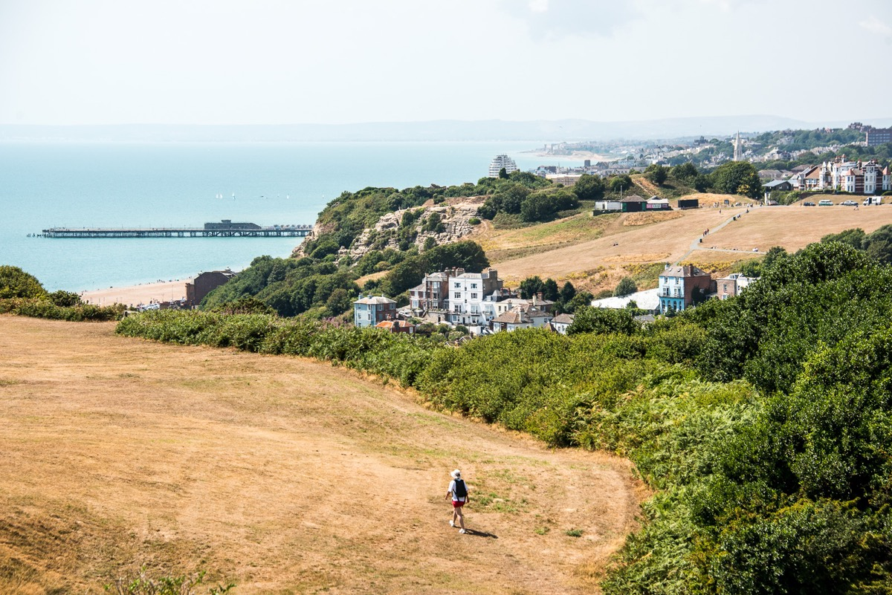

A Different Kind
of Old Town Walk
Where the Stade walk stays close to the beach and the working fishing fleet, this route climbs into the Old Town proper — the tangle of streets, twittens and courtyards squeezed between the East and West Hills. It is led not by the Old Hastings Preservation Society but by two local volunteer guides, running the walk as "Secret Hastings" in aid of a street-animal charity in Bulgaria.

The tone is looser than a formal heritage tour — as much legend and local colour as documented fact, and one guide says so herself at points, inviting the group to take some of it with a pinch of salt. That mix is part of the charm, and this write-up flags clearly where the record backs a story up and where it's best enjoyed as good storytelling.
George Street
& the Vanished Pubs
The walk begins beside the Old Pump House — a genuinely ancient building, timber-framed and dating from the early 17th century, standing on George Street. In its Victorian heyday this was the commercial heart of the Old Town, thick with shops, banks and trades, in sharp contrast to the quieter fishing quarter around the Stade that the walk will reach later.
One guide puts the historic total of pubs in the Old Town at over 87 — a startling density for a small town, though a fair number of Hastings's lost pubs are documented individually rather than as a single confirmed tally, and the exact figure varies by source and by period counted. What's certain is that the pattern of closures one guide points out along the route — corner buildings that are now shops, cafés or private houses but were once taverns — is real and easy to trace on foot.
St Clement's Church
& the Cannonball
St Clement's is one of the Old Town's two ancient parish churches, its origins going back to 1080. Look up at the tower's belfry window and you'll see two round objects set either side of it. One is a genuine cannonball, commemorating an 18th-century bombardment of Hastings by a combined French and Dutch fleet; the other is a stone replica, added later purely to balance the composition.
The church itself has been rebuilt more than once after French raids, most seriously in 1377, and its stained glass was blown out by German bombing in 1943. The novelist behind the wartime detective series Foyle's War is said to have set his fictional inspector's house nearby on Croft Road, at the western end of the church.
Houses Built
from Shipwrecks
The small black-and-white timbered cottages along this stretch are, according to one guide, built at least partly from the salvaged timbers of wrecked ships hauled ashore — low ceilings, wooden floors and heavy beams throughout, a practical use for driftwood in a town that had little else to build with cheaply.
One cottage on this row was, by the 1800s, being let out informally to lodgers — an early form of guesthouse. Around twenty years ago, a set of diaries kept by former lodgers was found hidden beneath the stairs during renovation work, and now sits in the local museum, tracing the comings and goings of the people who once stayed there.
One house along this row will be familiar to fans of Foyle's War — the ITV wartime detective drama filmed extensively around Hastings — as a location used prominently in the series, now converted into private apartments.
Twittens &
the Sweeney Todd Legend
As in the fishing quarter, this part of the Old Town is threaded with twittens — narrow cut-through passages, a word Sussex dialect keeps for what Londoners would simply call an alley. They exist because the Old Town, hemmed in between two hills, ran out of room for conventional streets; any gap between existing buildings became a shortcut.

One such passage leads to a small courtyard once known as Butcher's Alley, historically a poor and crowded corner of town, now picturesque enough that artists still come to sketch its cottages. It's here that one guide tells the most colourful story of the walk.
The tale, as told on the walk, holds that Sweeney Todd — the "Demon Barber of Fleet Street" — began his working life as a 14-year-old apprentice in a Hastings butcher's shop on this street, learning his skill with a blade there before moving on to London.
This is entertaining, but it isn't history. Sweeney Todd is, by firm scholarly consensus, an entirely fictional character, created for a Victorian penny-dreadful serial, "The String of Pearls," published in 1846–47. No trial, birth or death record for a real Sweeney Todd has ever been found, in Hastings, Fleet Street, or anywhere else. The story is best enjoyed exactly as one guide frames it — a legend, offered for fun rather than fact.
The Coaching Inn
at 23 High Street
Now a bed and breakfast, this building was once one of several coaching inns strung along the Old Town's High Street, where stagecoach horses and drivers rested overnight. A surviving side door, level with where a coach would have stood, let passengers step directly from the building into the carriage without descending to street level — a detail of real practical value to anyone travelling in the wide skirts fashionable in the 1700s and 1800s.
One guide also points out small wooden floor tiles just inside, said by a visitor on a previous tour to be the original setts that horses' hooves would have stepped on — wood being less slippery than stone in wet or frosty weather. The guides are candid that this specific claim hasn't been independently verified, and offer it as an interesting possibility rather than a settled fact.
The Smuggler's Cottage
Smuggling in Hastings ran from the 1700s well into more recent memory, and this house is presented on the walk as a working part of that trade. A lantern placed in an upstairs window signalled to boats waiting offshore: light showing meant it was safe to land contraband — brandy, lace, tobacco — under cover of darkness; darkness meant stay out at sea.

According to local tradition, the household that tended the signal lantern could be bribed by customs officers to show a false light — luring smugglers ashore straight into an ambush.
The Old Town's cellars are said to interconnect beneath several neighbouring houses, allowing a smuggler carrying goods to duck into one cellar and emerge, moments later, in someone else's front room — a detail impossible to verify house by house today, but consistent with the well-documented general pattern of concealed cellars and connecting passages across smuggling-era coastal towns in this part of England.
Old Hastings House
& the Window Tax
Old Hastings House, today a residential care home, was once the grandest private house in the Old Town, built to impress visitors arriving along what is now Old London Road. Its façade carries a genuine, documented curiosity: several of its upper windows are not real — they're painted onto blocked-up recesses.

The window tax, in force in England from 1696 until 1851, charged householders according to how many windows their property had. Wealthy owners who wanted the visual status of a grand, many-windowed house without the tax bill sometimes bricked up real windows and painted false ones in their place — a trick recorded in old photographs of this exact house, which show the blanked-out windows still visible before later restoration.
A Mortuary House
& the Stag Inn
All Saints Street was once known as Fish Street, home to the fishing families whose trade this whole side of town depended on. One house here served, until as recently as the 1960s, an unusual and grim function — its deep, stone-lined cellar used to store the bodies of people who drowned or died locally, until they could be identified or claimed.

Further along stands the Stag Inn, a genuinely 16th-century timber-framed building, refronted in the 18th century, and a strong contender for the oldest surviving pub in Hastings. During renovation work, builders found the mummified remains of two cats — and, by some accounts, rats — sealed inside a chimney, now displayed on the wall. The most likely explanation is mundane: the animals became trapped and died, and the dry, smoky conditions inside the chimney preserved rather than decomposed them. Local folklore prefers witchcraft or a protective charm against evil spirits — a superstition once genuinely practised in this part of England, whatever actually happened to these particular animals.
A blocked smugglers' tunnel is also said to run from the pub's cellar, reputedly as far as Rock-a-Nore beneath the East Hill — consistent with, though not separately verifiable from, the wider network of smuggling-era passages the walk describes elsewhere.
Piece of Cheese Cottage
This narrow, wedge-shaped building takes its popular name from its shape — a slim triangle of land left over after the Star brothers built the row of cottages beside it. According to the story one guide tells, the brothers built on the leftover triangular plot specifically to win a bet that nothing usable could be built there; the result, completed in 1871, won a design award from the local council of the time.

Over the years the tiny building has served as a coffin-maker's workshop upstairs — with a hoist still visible above the front door, used to lower finished coffins down to the street rather than manoeuvre them through the narrow stairs — and, more recently, as a small local museum and a private home.
The Lookout
& the Net Shops
The walk ends, like the Stade walk, at the Lookout — the viewpoint above the Old Town where fishermen's wives and mothers once watched for a flag on a returning boat. The other guide adds a local ghost story attached to the ruins of Hastings Castle visible from here: that a true Hastings-born local, rowing out on the anniversary of the Battle of Hastings — 14 October — might see the castle as it looked when newly built, lit by moonlight.

Looking down over the net shops, one guide offers a different origin story from the documented one: that the sheds were a gift to the town from Spanish sailors, shipwrecked locally and nursed back to health by Old Town families, who supposedly built them as thanks in a style otherwise found only on parts of Spain's northern coast.
It's a lovely idea, but the documented history is more municipal than maritime: the net shops date from an 1834–35 Hastings Council planning decision, after a new sea-defence groyne created a narrow strip of fresh land in front of the cliffs. With too many boat owners wanting space, the council allotted plots only about eight or nine feet square — and the shops grew upward, not outward, purely to fit the ground available. No shipwrecked Spanish crew appears in that record.